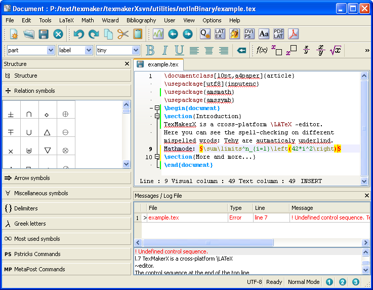

Latest News
2011-06-15:
TexMakerX is now called
TeXstudio
2011-03-19:
The new release TexMakerX 2.1 is available
which adds again new features and fixes some bugs.
2010-11-29:
The new release TexMakerX 2.0 is available
which adds new features and fixes some bugs
You can download it
below.
2010-07-20:
The new release TexMakerX 1.9.9a is available
which adds new features and fixes some bugs
You can download it below.
more...
2009-11-25:
2010-05-06:
The new release TexMakerX 1.9.9 is available
which adds new features and fixes some bugs
You can download it below.
The new release TexMakerX 1.9.3 is available
and fixes several bugs
You can download it below.
Also the old releases have been downloaded
ten thousand times so far.
2009-10-26:
The new release TexMakerX 1.9.2 is available
which adds several new features and fixes some bugs
2009-05-06:
The second release TexMakerX 1.8.1 is available
which fixes several bugs and add some new features
2009-04-03:
TexMakerX 1.8 has now been
downloaded one thousand times.
2009-02-22:
The first release TexMakerX 1.8 is finished.
You can download it below.
TeXstudio is a fork of the LaTeX IDE TexMaker and gives you an environment where you can easily create and manage LaTeX documents.
It provides modern writing support, like interactive spell checking, code folding and syntax highlighting. Also it serves as a starting point from where you can easily run all necessary LaTeX tools. (you can see more features below)
You can run it on Windows, Unix/Linux, BSD and MacOSX systems and modify it if you want, since it is licensed under the GPL.
Althought TeXstudio has a lot of additional features, it tries to be like an improved version of Texmaker, so it keeps it look&feel as well as its version number.

More screenshots...
IWE - Integrated Writing Environment
- All LaTeX tools can be called from TeXstudio with just one key press and you can add your own command line options (e.g. for forward/inverse search)
- LaTeX tags and 1102 mathematical symbols you can easily select and add to your text
- Wizards generating necessary code (e.g. documents, tabular/array-environments and BibTex-types)
- LaTeX errors are displayed in a Log panel and highlight within the tex file
- BibTeX will be automatically called if the bib files are modified
- LaTeX documentation where you can lookup the tags you don't know
- Customizable menus, toolbars and environments
- Scripting to control TeXstudio with user-written scripts
- DDE-Support to interact with other programs on Windows
- And also customizable code snippets, tabbed MDI view, ...
-
- Interactive spell checker which marks spelling mistakes while you type them
- Interactive reference checker which marks wrong reference/label combinations and wrong citations
- Interactive syntax checker which marks wrong spelled LaTeX commands
- Syntax highlighting drawing LaTex commands in different, customizable formats
- Code folding which allows you to hide certain blocks
- Auto completion completes tags you wrote and shows corresponding help entries, uses the taglists from kile
- Unicode support which can handle files in all encodings
- Incremental search and replace on a search panel at the bottom of the text panel
- Text Navigation jumps to bookmarks, certain lines, last changes and LaTeX errors/warnings
- Key Remapping of single keys for automatically text insertion (e.g of nice quotation marks)
- And also line numbers, repetition checker, dynamic word wrapping, parenthesis highlighting, parenthesis completion, unicode table, undo/redo, line change state, table editor...
Utilities
- Structure View which shows the logical hierarchy of a file and is interactively updated
- PDF Preview which shows the compiled pdf file and supports synctex
- Math Preview which shows the latex output of a single expression within the text
- Find in files dialog let you search in currently opened files
- Thesaurus which shows possible synonyms for a certain word
- HTML Converter which creates a html out of your LaTeX-based PS-file
- Text analysis counting and showing often used words or phrases
- Random Text generator which automatically creates a text similar to the one you wrote
- SVN support to synchronize local changes with the repository
Installation
- Platform independence allows you to use it on Windows, Linux, BSD and Mac
- Automatical detection of MikTeX, Ghostscript and Standardlatex
- USB-Mode stores its settings in a texmakerx.ini (only if you create one!), so you can use the same configuration on different computers
- Translated in English, German, French and more languages
You can find more details in the
user manual or in the
SVN Changelog.
Planned features are listed in the tex-based
road map.
Feel free to submit an idea to our
idea torrent if you have any wishes (You can find older or anonymously submitted ideas in the
feature request tracker).
There is also a
wiki where you can write about the things you consider important in TeXstudio. You can also find scripts and installation hints there.
| Platform | Version | Type | Size | QT | Poppler | Dictionaries | How to install |
|---|
| Windows |
| NT family |
2.1 |
Installer |
15.7 MiB |
contains 4.7 |
contains 0.13.2 |
en, fr, de |
download and double click on the installer exe |
| NT family |
2.1 |
USB (.zip) |
21.9 MiB |
contains 4.7 |
contains 0.13.2 |
en, fr, de |
download and unzip the zip |
| Linux |
| Ubuntu 10.04 |
2.1 |
.deb 386 Package |
11.3 MiB |
needs 4.5.2 |
needs 0.12.4 |
en, fr, de |
download and open it with your package manager |
| Ubuntu 10.10 |
2.1 |
.deb 386 Package |
11.9 MiB |
needs 4.5.2 |
needs 0.14.3 |
en, fr, de |
download and open it with your package manager |
| Ubuntu 10.10 |
2.1 |
.deb amd64 Package |
11.9 MiB |
needs 4.7 |
needs 0.14.3 |
en, fr, de |
download and open it with your package manager |
| Ubuntu 11.04 |
2.1 |
.deb 386 Package |
11.8 MiB |
needs 4.7.2 |
needs 0.16.4 |
en, fr, de |
download and open it with your package manager |
| Ubuntu 11.04 |
2.1 |
.deb amd64 Package |
11.9 MiB |
needs 4.7.2 |
needs 0.16.4 |
en, fr, de |
download and open it with your package manager |
| Debian wheezy |
2.1 |
.amd64 Package |
11.9 MiB |
needs 4.6.3 |
needs 0.12.4 |
en, fr, de |
download and open it with your package manager |
| Fedora 13 |
2.0 |
Repository package |
|
|
|
en, fr, de |
Install it with the Yellowdog Updater: su -c 'yum install texmakerx' |
| MacOSX |
| 10.5 x86+ppc |
2.1 |
Zip File |
30.3 MiB |
? |
? |
en, fr, de |
download, extract and start it. |
| FreeBSD |
| 2.0 | FreshPorts.org | | 4.4? | - | en, fr | cd /usr/ports/editors/texmakerx/ && make install clean |
| All Platforms |
| latest | SVN source | | needs 4.3 | - | en, fr, de | see below |
| 2.1 | source tarball | 11.8 MiB | needs 4.3 | - | en, fr, de | see below |
| 2.0 | source tarball | 11.6 MiB | needs 4.3 | - | en, fr, de | see below |
| 1.9.9a | source tarball | 10.4 MiB | needs 4.3 | - | en, fr, de | see below |
| 1.9.9 | source tarball | 10.4 MiB | needs 4.3 | - | en, fr, de | see below |
| 1.9.3 | source tarball | 10.4 MiB | needs 4.3 | - | en, fr, de | see below |
| 1.9.2 | source tarball | 9.9 MiB | needs 4.3 | - | en, fr, de | see below |
| 1.8.1 | source tarball | 2.0 MiB | needs 4.3 | - | en, fr | see below |
|
|
| New Translations |
| Czech | for 1.9.9 | qm-file | | download the new qm-file and replace the existing one with it (thanks to Pavel Fric) |
| Hungarian | for 1.9.9 | qm-file | | download the new qm-file and replace the existing one with it (thanks to István Blahota and András Somogyi) |
Snapshots
In this
directory you can find binary snapshots which contain most recent changes and features (but are still older than the SVN).
Source
You can choose a source download in the table above.
Then you need
GCC and the
Qt Toolkit (>=4.3.0, but >= 4.5.0 is recommended) to compile it.
You can compile it on all platforms using: qmake texmakerx.pro && make release
On Unix/MacOSX it is also possible to call: sudo sh BUILD.sh
How can I change the shortcuts?
This is simple: Click on the menu item "Options\Configure TeXstudio..." and open the page "Shortcuts" where you can see all menus in a tree like structure. You can now select an item and double click on the third column "Current Shortcut" (you can also single click and then press f2). This will create a combobox in which you can select a new shortcut. If the shortcut you want is not contained in the list, you can also manually enter it in the box (e.g. "Ctrl+F13").
In the newest version you can also change the keybindings of the editor at the bottom this table. So if you really want to annoy someone, you can map arrow left to arrow right, and vice verse. There you can not only change the shortcuts in the third column, but also the actions in the first column. Due to the way qt shortcuts works, shortcuts set for menu items will override editor keys.
Why does it replace so many characters with quotation marks?
As a new feature in TeXstudio " are replaced with French ("< and ">) quotation marks (in older version it also always replaced ' but now it does that only if you work on a German system).
If you don't want these replacements you can change the settings in the Options\Configure\Shortcuts table.
Where can I get the SVN version?
See
above.
How can I run it on MacOSX?
This question is deprecated since the 1.8.1 release which provides a
.dmg image,
but if that doesn't work (e.g. if you have MacOSX 10.4 or PPC), you can still follow these old steps: (thanks to yunghsianghan):
- Download QT SDK for mac from http://www.qtsoftware.com/downloads and install it.
- Open Terminal.app
- Download source files of TeXstudio from svn: http://texmakerx.svn.sourceforge.net/svnroot/texmakerx/trunk/
- Write the following first lines in the terminal: Cd trunk
- Sudo sh build.sh.
Password:
TexMakerX compilation :
----------------------------------------
Enter path to QT4 (/usr/lib/qt4 or ...):
- /usr/bin
Enter SYSTEM (1: UNIX ; 2: MACOSX) :
- 2
Then compiling processing continued for several minutes.
Finally we have texmakerx.app in /Applications.
Sam
The easiest way to help on the development with TeXstudio is to use it!
Furthermore you can tell everyone that you write your texts with TeXstudio, if you like it.
If you have any suggestions, or even created patches you can submit them either over the
bug or
feature request tracker. Another alternative is just to use
e-mail.
If you speak a foreign language except English or German, you can help us a lot by providing a new translation for TeXstudio.
Especially help for French is needed, because, although there is a
French translation, I created it by looking up every word in a dictionary, which is really slow and not so reliable...
If you are insterested in providing a new one, you should check out the SVN repository, and execute the Qt lupdate tool on texmakerx.pro to get an up-to-date ts file.
Alternatively you could start from an old translation (e.g. last
German one, but it may not be up to date)
You can also support us by just using TeXstudio and reporting every bug you encounter